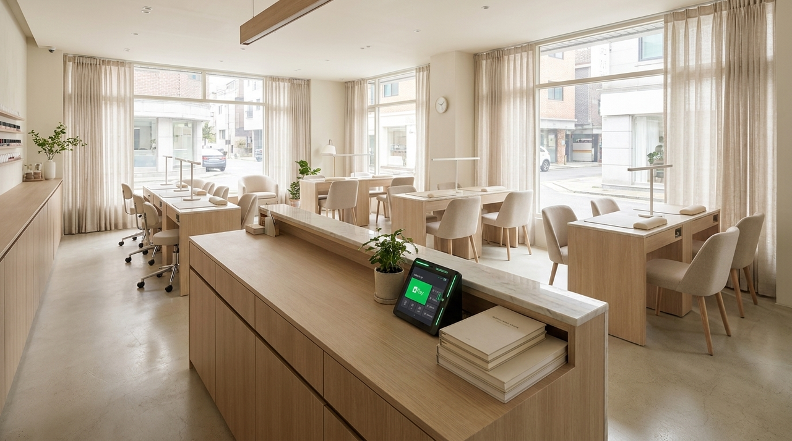
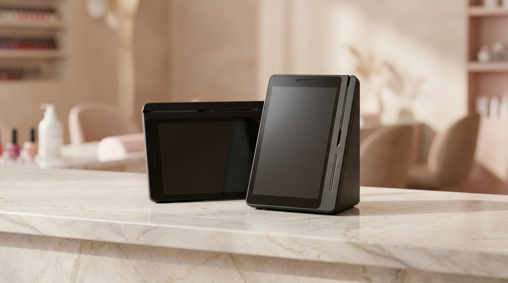
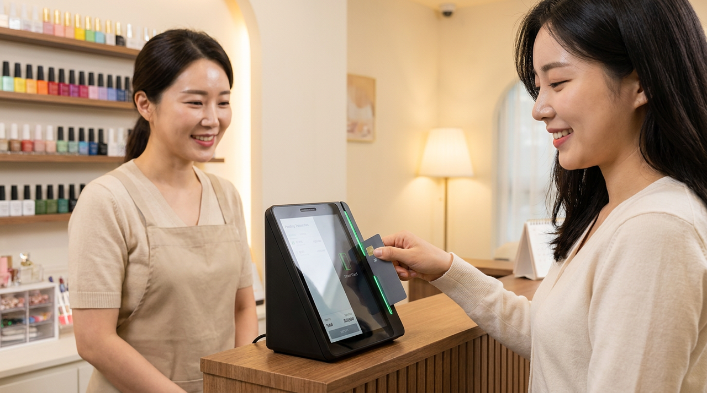

예약 손님이 다시 오게 만드는 것은 결제 다음에 있습니다
네일샵처럼 예약으로 운영되는 매장은 신규 손님을 한 명 모으는 데 드는 노력이 큽니다. 그래서 이미 다녀가신 손님이 다시 오시는 것이 매출에서 훨씬 큰 부분을 차지합니다. 그런데 대부분의 매장에서 손님과의 접점은 결제가 끝나는 순간 함께 끊깁니다. 저희가 예약 기반 매장을 다니며 본 바로는, 재방문이 잘 이어지는 매장에는 공통점이 있었습니다. 결제 이후에 남는 것이 있었다는 점입니다. 이 글에서는 그 남는 것을 어떻게 만드는지 정리했습니다.

손님은 좋았어도 잊습니다
시술이 마음에 들었어도, 두 달 뒤에 손님은 가게 이름을 정확히 기억하지 못합니다. 위치는 대충 알지만 검색해서 다시 찾아야 하고, 검색하면 다른 가게가 먼저 보입니다. 그렇게 좋았던 손님이 다른 곳으로 갑니다.
이건 서비스의 문제가 아니라 기억의 문제입니다. 그리고 기억은 손님에게 맡길 것이 아니라 매장이 남겨 두어야 하는 것입니다. 다음에 찾기 쉬운 흔적이 남아 있으면 재방문은 훨씬 자연스러워집니다.
결제는 이 흔적을 남기기에 가장 좋은 순간입니다. 손님이 만족한 직후이고, 어차피 한 번은 거치는 절차이기 때문입니다. 이 순간에 아무것도 남지 않으면, 그 뒤에 따로 연락할 명분을 만들기가 어려워집니다.
검색에서 다시 만나는 구조를 만들어 두세요
요즘 손님이 다시 찾는 경로는 대개 검색입니다. 지도에서 위치를 보고, 리뷰를 읽고, 예약이 되는지 확인합니다. 이 흐름 안에 우리 가게가 들어가 있지 않으면, 좋았던 기억이 있어도 다시 오기까지의 단계가 늘어납니다.

반대로 검색에서 바로 보이고, 예약이 이어지고, 방문해서 결제까지 같은 흐름으로 끝나면 손님 입장에서는 번거로움이 없습니다. 재방문은 마음의 문제이기도 하지만, 대부분은 번거로움의 문제입니다.
여기에 결제 뒤 적립이나 혜택이 남으면 이유가 하나 더 생깁니다. 손님 입장에서는 쌓이는 곳을 다시 찾게 됩니다. 다만 적립 조건과 비율은 서비스 정책에 따라 달라질 수 있으니, 실제 적용 내용은 공식 안내를 확인해 주세요.
예약 매장에서 확인하면 좋은 것들
| 확인 항목 | 왜 필요한가 |
|---|---|
| 손님이 우리 가게를 찾는 경로 | 검색인지 소개인지에 따라 준비가 달라짐 |
| 재방문 주기 | 주기가 짧을수록 결제 후 흔적의 효과가 큼 |
| 예약과 결제가 이어지는지 | 끊기면 손님이 한 번 더 움직여야 함 |
| 노쇼·취소 처리 방식 | 예약 매장의 가장 큰 손실 항목 |
| 리뷰가 남는 자리 | 다음 손님이 판단하는 근거 |
| 매출이 한곳에 보이는지 | 어떤 시술이 재방문으로 이어지는지 확인 |
마지막 항목이 특히 중요합니다. 어떤 손님이 다시 오시는지 기록이 남아야, 무엇을 더 하면 좋을지 판단할 수 있습니다. 감으로 하면 매번 처음부터 다시 시작하게 됩니다.

결제가 매끄러우면 마지막 인상이 좋아집니다
시술이 아무리 좋아도 마지막에 계산이 어수선하면 그 느낌이 남습니다. 카드가 안 읽히거나, 다른 결제 수단을 못 받거나, 영수증 문제로 시간이 걸리면 손님은 문을 나서며 그 장면을 기억합니다.
네일샵은 시술 시간이 길고 손님과 오래 마주 앉는 업종입니다. 그 시간 동안 쌓은 좋은 인상을 마지막 1분에 잃지 않는 것이 중요합니다. 결제가 조용히 한 번에 끝나면, 손님 기억에는 시술만 남습니다.
작은 일 같지만 예약 매장에서는 이런 마지막 인상이 리뷰로 이어집니다. 그리고 그 리뷰가 다음 손님을 데려옵니다. 결제는 매출을 받는 절차이면서 동시에 마지막 접객입니다.
노쇼와 취소도 결국 기록의 문제입니다
예약 매장에서 가장 아픈 손실은 노쇼입니다. 자리를 비워 두었는데 손님이 오지 않으면 그 시간은 되돌릴 수 없습니다. 네일샵처럼 한 번 시술에 시간이 오래 걸리는 업종은 한 건의 노쇼가 그날 매출에서 차지하는 비중이 큽니다.
이 문제를 완전히 없앨 방법은 없지만, 줄이는 방법은 있습니다. 예약과 결제가 이어져 있으면 손님 입장에서도 약속의 무게가 달라집니다. 그리고 어떤 시간대에, 어떤 경로로 들어온 예약에서 노쇼가 잦은지 기록이 남으면 그 시간대만 다르게 운영하는 판단이 가능해집니다.
취소도 마찬가지입니다. 취소가 자주 발생하는 요일이나 시간이 보이면, 그 자리를 다른 방식으로 채울 수 있습니다. 감으로는 "요즘 취소가 많네" 정도로만 느끼지만, 기록이 있으면 어디를 손봐야 하는지가 분명해집니다.
작은 매장일수록 이런 조정 하나가 크게 돌아옵니다. 자리가 몇 개 없으니 비는 시간의 값이 크기 때문입니다. 저희가 상담에서 예약 흐름부터 여쭙는 것도 이 때문입니다. 결제기 이야기보다 먼저, 지금 어디서 새고 있는지를 함께 보는 편이 도움이 됩니다.
자주 묻는 질문
Q. 이미 네이버 플레이스를 쓰고 있는데 무엇을 더 해야 하나요?
현재 쓰고 계신 서비스와 운영 방식에 따라 필요한 구성이 달라집니다. 어떤 서비스를 이용 중이신지 알려 주시면 그 위에 얹는 최소 구성을 안내해 드립니다.
Q. 적립이 재방문에 정말 도움이 되나요?
손님 입장에서는 쌓이는 곳을 다시 찾게 됩니다. 다만 적립 조건과 비율은 서비스 정책에 따라 달라질 수 있으니 공식 안내를 확인해 주세요.
Q. 예약 손님이 대부분인데 결제기가 꼭 필요한가요?
예약과 결제가 끊겨 있으면 손님이 한 번 더 움직여야 합니다. 그 한 번이 재방문 결정에 영향을 줍니다. 현재 예약을 어떻게 받고 계신지 알려 주시면 함께 정리해 드립니다.
Q. 비용은 어떻게 되나요?
매장 구성에 따라 달라져 상담 시 직접 공급가로 안내해 드립니다. 네이버단말기는 약정 없이 이용하실 수 있습니다.
다시 오시게 하는 일은 결제 다음에서 시작됩니다
좋은 시술은 그날의 만족을 만들고, 결제 뒤에 남는 것이 다음 방문을 만듭니다. 손님이 우리 가게를 어떤 경로로 찾아오시는지, 예약과 결제가 지금 이어져 있는지만 알려 주시면 무엇을 먼저 정리하면 좋을지 함께 찾아 드리겠습니다. 정품 신제품 보증, 수도권 직영 설치로 방문해 드립니다.
- 📞 전화상담 1544-7754
- 🌐 홈페이지 https://nwpos.co.kr

📷 인스타그램 팔로우 https://www.instagram.com/nurinetworkspos

▶️ 유튜브 구독 https://www.youtube.com/@nurinetworks